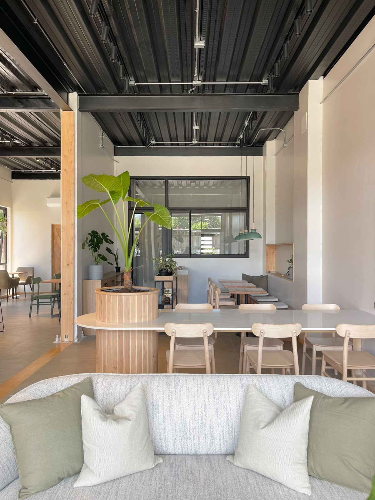
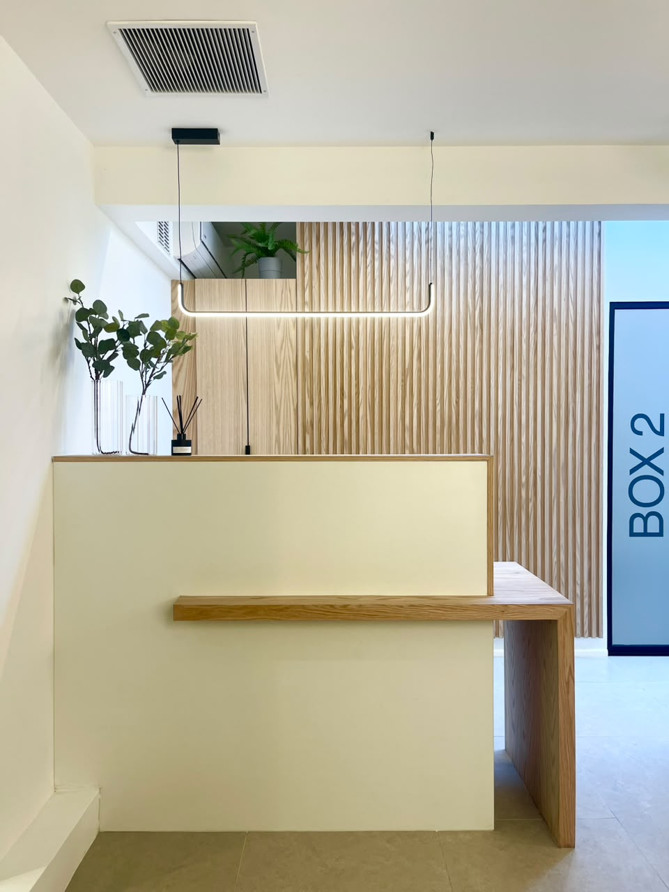
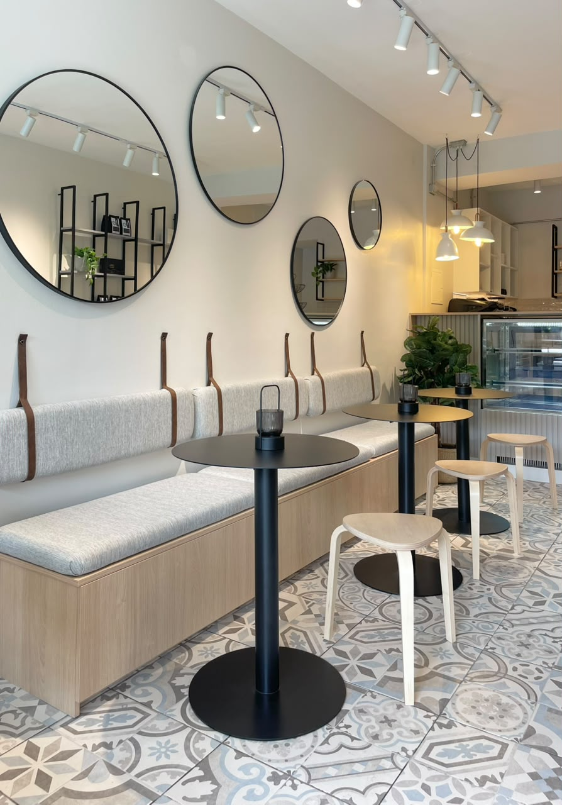

Pucón · Villarrica · Chile
Espacios que se sienten bien.
Arquitectura contemporánea, interiorismo y proyectos integrales pensados para acompañar la forma en que vives, trabajas y compartes.


Neuroarquitectura
Diseñar desde la experiencia de habitar.
La neuroarquitectura nos ayuda a mirar cada proyecto desde las personas que lo van a vivir. Consideramos la luz, los recorridos, la materialidad, la acústica y el vínculo con la naturaleza para crear espacios claros, acogedores y funcionales.
No es una fórmula: es una forma de tomar mejores decisiones de diseño para que un espacio acompañe tu rutina y exprese tu identidad.
Bienestar cotidiano
Ambientes que se entienden, se recorren con naturalidad y hacen más amable el día a día.
Materialidad sensible
Texturas, luz y proporciones que dan carácter sin perder confort.
Identidad y uso
Espacios que responden a quienes los habitan y a la forma en que quieren vivir o trabajar.
Portafolio
Proyectos que hablan por sí mismos.
Una selección de espacios comerciales desarrollados en Villarrica y Pucón.

Arquitectura integral
Una visión completa para hacer realidad tu proyecto.
Desde la primera idea hasta la coordinación y ejecución de obra, acompañamos cada etapa para sostener la intención de diseño en cada decisión.
Conoce cómo trabajamosProceso
Una ruta clara, desde la idea hasta el espacio construido.
Conversemos
Escuchamos tus necesidades, tu contexto y lo que esperas transformar.
Diseñamos
Convertimos la idea en una propuesta espacial con identidad y propósito.
Desarrollamos
Coordinamos el proyecto técnico, permisos y especialidades necesarias.
Materializamos
Acompañamos la ejecución para cuidar la calidad y coherencia del resultado.
Quiénes somos
Arquitectura que conecta bienestar, estética y vida cotidiana.
María José Sanz
Fundadora de Escuadra Arquitectura. Desde Pucón y Villarrica, desarrolla proyectos residenciales y comerciales con una mirada contemporánea, sensible y atenta a la experiencia de habitar.
Contacto
Hablemos de lo que quieres crear.
Cuéntanos dónde está tu proyecto, qué necesitas transformar y en qué etapa te encuentras. Escríbenos por WhatsApp o Instagram para comenzar la conversación.